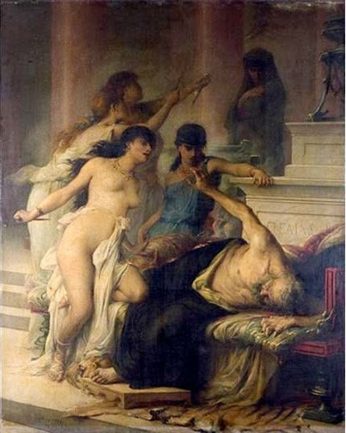

Bộ lông Cừu vàng đã về Iolcos, Cả kinh thành làm lễ rước trọng thể báu vật đó. Không ai là người không trông thấy ánh sáng ngời ngợi từ Bộ lông Cừu vàng tỏa ra. Ai nấy đều vô cùng hoan hỉ khi thấy từ nay những người Hy Lạp đời này kế tiếp đời khác lưu giữ báu vật.
Jason về nhà. Một biến cố khủng khiếp đã xảy ra trong khi chàng đi vắng. Pélias đã bức hại người cha già thân yêu của chàng. Y buộc ông cụ phải uống máu một con bò mộng, theo người xưa đó là một liều thuốc độc ghê gớm. Aeson vật ra chết ngay sau khi rời tay khỏi chén. Alcimédé, vợ của cụ, xót xa, đau đớn trước cái chết của chồng đã thắt cổ tự vẫn. Còn Pélias, y không ngờ Jason lại có thể hoàn thành được những thử thách nặng nề nguy hiểm đến như thế để trở về. Ngai vàng mà y đang ngự đã đến lúc phải trao lại cho Jason. Có chuyện kể, Pélias không giết chết Aeson, mà Médée bằng pháp thuật của mình đã làm cho Aeson trẻ lại khiến cho Pélias thèm muốn, và đó là mưu kế của Médée bày ra để trả thù Pélias đã không trao quyền lại cho Jason. Câu chuyện xảy ra như sau:
Một đêm khuya, Médée bỏ ra đi. Nàng mặc toàn đồ đen, đi tất, tóc buông xõa. Khi đó mọi vật đều chìm đắm trong giấc ngủ và bóng đêm. Médée dưới ánh sao mờ, lần bước tới một ngã ba đường. Đến đây nàng dừng lại, giơ tay cao lên trời hú to lên ba tiếng. Rồi nàng quỳ xuống đọc những câu thần chú ma quái. Nàng gọi, nàng hú hồn các thứ âm binh. Nàng cầu xin nữ thần Hécate giúp đỡ nàng. Nghe lời nàng cầu nguyện, nữ thần Hécate hiện ra trên cỗ xe do những con rồng có cánh kéo. Nữ thần gọi Médée lên xe. Thế là Médée bắt đầu cuộc hành trình đi tìm các thứ lá, cỏ, rễ cây thần kỳ về để pha chế các loại thuốc linh diệu. Suốt chín ngày đêm Médée đi qua các cánh rừng, ngọn núi, đi dọc theo nhiều con sông và lần mò ra tận bờ biển tìm vào các hang hốc sâu thẳm tối tăm. Nàng trở về nhà với biết bao nhiêu thứ lá cây, rễ cây, cỏ, hoa... Nàng sai gia nhân thiết lập hai bàn thờ và cho đào trước mỗi hàn thờ một cái hố, một dành cho nữ thần Hécate, một dành cho nữ thần Tuổi thanh xuân. Sau đó nàng giết những con cừu đen tẩm mật ong vàng với sữa để làm lễ hiến tế các nữ thần Tuổi thanh xuân, bóng đêm và nữ thần ma thuật Hécate. Nàng cầu khấn các vị thần ở thế giới âm phủ Hadès và Perséphone, xin đừng tước đoạt cuộc sống của Aeson. Sau đó nàng mời lão vương Aeson tới dùng pháp thuật làm cho cụ ngủ đi một giấc dài, mê mệt trên một lớp cỏ tiên. Trong khi đó, trên một chiếc chảo đồng, Médée nấu thuốc. Khi thuốc sôi, bọt nổi lên, Médée bèn lấy một cành cây khô để quấy và cũng là để thử. Kỳ lạ thay, cành cây được nhúng vào chảo thuốc bỗng xanh tươi trở lại. Thấy thuốc đã chín, Médée bèn cầm lấy thanh gươm tiến đến chỗ Aeson ngủ, cứa mạnh lưỡi gươm vào cổ cụ già. Máu trong người cụ tuôn ra. Đó là thứ máu đã già cỗi làm cho con người suy yếu. Tiếp đó nàng rót vào người cụ chất thuốc nhiệm màu đã nấu ở trong chảo. Khi rót đã đầy, nàng khâu vết cứa ở cổ Aeson lại. Một lát sau cụ già tỉnh dậy. Lạ thay, tóc bạc không còn, những nếp da nhăn nheo biến mất. Khuôn mặt cụ hồng hào tươi tỉnh. Cụ đi nhanh nhẹn như một chàng trai, mất hẳn đi cái dáng hình lưng còng, lụ khụ, chậm rãi.
Việc cụ già Aeson trẻ lại khiến những người con gái của vua Pélias ngạc nhiên và dò hỏi. Các cô gặp Médée để tìm hiểu sự thật. Để làm cho các cô tin hẳn, Médée bắt một con cừu già ném vào chảo thuốc. Có người lại kể, Médée chặt con cừu ra làm bốn, năm khúc rồi mới ném vào chảo thuốc. Chỉ một lát sau từ trong chảo nhảy ra một con cừu non khỏe mạnh, chạy tung tăng. Những người con gái của Pélias hết sức khâm phục tài năng của Médée và khẩn khoản nhờ nàng làm giúp cho cha mình trẻ lại.

Những người con gái của Pêliax vô tình giết chết cha
Sự việc diễn ra tương tự như đối với Aeson. Pélias được những người con gái dẫn đến nhà Médée. Họ đặt người cha già nằm trên lớp cỏ tiên. Chảo thuốc đang sôi nhưng có điều không phải được nấu bằng những thứ lá hôm trước. Médée giục những người con gái Pélias cầm gươm cứa vào cổ cha để cho thứ máu già nua chảy hết ra. Chẳng cô nào dám làm. Mãi sau mới có một cô mạnh bạo tiến đến chỗ người cha đang ngủ đưa thanh gươm vào cổ ông cứa mạnh một cái. Máu chảy ra ồng ộc. Bất ngờ Pélias tỉnh dậy. Y đưa đôi cánh tay yếu ớt ra, mắt đờ đẫn kêu lên:
- Ôi các con gái thân yêu của ta! Ta chết đây. Ta đã làm gì đến nỗi để các con giết ta!
Những người con gái của Pélias rú lên, bưng mặt khóc. Médée liền chạy tới giật lấy thanh gươm, đâm tiếp cho Pélias mấy nhát. Sau đó nàng chặt xác y ra bỏ vào chảo thuốc đang sôi. Nhưng chẳng có cái gì hết từ chảo thuốc đó trả lại.
Như vậy Jason và Médée đã trả được mối thù bầm gan tím ruột đối với tên vua độc ác. Những người con gái Pélias kinh hoàng vì sự việc vừa xảy ra mà họ là những người gánh chịu trách nhiệm một phần, đã hối hận, khóc than ngày đêm đến nỗi mất trí hóa điên. Còn Jason và Médée sau chuyện đó lập tức rời Iolcos. Một cỗ xe do những con rồng có cánh kéo, từ trời cao hạ xuống đón hai người, đưa sang trú ngụ ở đất Corinthe. Adraste con trai của vua Pélias không cho Jason kế vị vì lẽ Jason đã tòng phạm với Médée trong âm mưu ám hại Pélias. Tang lễ Pélias được tổ chức rất trọng thể. Ngoài những nghi lễ thờ cúng, hiến tế thần linh, người ta còn tổ chức những cuộc thi đấu thể dục thể thao để tưởng niệm linh hồn người quá cố. Đích thân thần Hermès đứng ra chủ tọa và chấm giải. Các vị anh hùng danh tiếng trên đất Hy Lạp đều kéo đến tỉ thí. Hai anh em Dioscures cùng với chàng Euphémos dự cuộc đua xe ngựa, Admète và Mopsos dự đấu quyền, Atalante và Pélée đấu vật. Chàng Iphiclos giành được giải nhất trong cuộc chạy thi.